자연생태복원기사(구) (2007-05-13 기출문제)
1과목: 환경생태학개론
1. 연안대의 서식하는 식물의 종류를 잘못 설명한 것은?
- 정수(emergent)식물 - 물속의 토양에 뿌리를 내리며, 몸체는 물에 잠겨 있고, 잎은 물 위로 성장하는 식물
- 식물(submerged)식물 - 물속의 토양에 뿌리를 내리며, 몸체가 모두 물에 잠겨 있는 수초
- 부엽(floating leaved)식물 - 물속의 토양에 뿌리를 내리며, 잎이 물 위에 떠있는 식물
- 부유(floating)식물 - 몸체가 전부 물에 잠긴 상태로 떠있는 수초
(정답률: 알수없음)

2. 지의류와 이끼류가 흔하고 버드나무류와 자작나무도 살고 있으며, 북아메리카의 북미산 순록 등 대형초식동물이 살고 있는 육상생태계로 가장 적합한 것은?
- 툰드라
- 타이가
- 침엽수림
- 사바나
(정답률: 30%)
3. 단백질, 탄수화물, 지질 등으로서 생물적 요소와 무생물적 요소를 연결하는 물질은?
- 무기 화합물
- 유기 화합물
- 비표적 생물체
- 계면 활성제
(정답률: 알수없음)
4. 중금속에 오염된 어느 늪지에 다음의 생물이 살고 있다. 생물농축이 일어날 경우 생체 내 중금속 농도가 가장 높은 생물은?
- 하루살이
- 피라미
- 배스
- 식물성 조류
(정답률: 알수없음)
5. 열대산림에서 물질순환을 돕는 생물적 작용 중 옳지 않은 것은?
- 뿌리 얽힘은 떨어진 잎의 영양소가 용탈되기 전에 앞에서 재빨리 영양소를 되찾아오는 역할을 한다.
- 균근 곰팡이는 생물체 내의 영양소 회수와 부유를 크게 촉진시킴으로써 영양소를 포획하는 함정과 같은 역할을 한다.
- 뿌리 얽힘은 탈질화를 일으키는 세균들의 활동을 촉진하여 공기 중으로 질소가 손실되는 것을 막는다.
- 조류(algae)와 지의류(lichen)는 나뭇잎들의 표면을 덮고 있으며, 빗물로부터 영양소를 모으고 공기로부터 질소를 고정하는 역할을 한다.
(정답률: 30%)
6. 대기 중의 질소를 고정하는 미생물과 공생하는 식물이 아닌 것은?
- 아까시나무
- 보리수나무
- 오리나무
- 자작나무
(정답률: 알수없음)
7. 교토의정서에서 채택한 내용 중 온실가스 감축목표 이행을 위해서 당사국의 감축 이행시 신축성을 위하여 허용한 내용이 아닌 것은?
- 탄소세(Carbon Tax)
- 배출권 거래(Emission Trading)
- 공동이행(Joint Implementation)
- 청정개발체제(Clean Development Mechanism)
(정답률: 46%)
8. 식물분포의 결정요인이 아닌 것은?
- 기후조건
- 토양조건
- 변화하는 환경요인에 대한 적응성
- 인근 종에 대한 친화성
(정답률: 82%)
9. 잎 면적 지수에 대한 설명으로 옳은 것은?
- 지표면의 단위면적 대 전체 잎 면적 비율
- 지표면의 전체면적 대 전체 잎 면적 비율
- 지표면의 단위면적 대 지표면 위 잎 면적 비율
- 지표면의 전체면적 대 단위 잎 면적 비율
(정답률: 알수없음)
10. 낮에 주위가 따뜻해지면 햇빛을 받는 식물과 새의 몸에서는 온도 상승에 따라 체온을 일정하게 유지하기 위한 생리적 변화가 나타나는데 이처럼 외부환경이 달라져도 생물체 내부의 환경이 일정하게 유지되는 경향은 무엇인가?
- 순화
- 호흡
- 향상성
- 주기성
(정답률: 70%)
11. 자연 수역의 수질 오염을 조사하는데 이용되지 않는 지표는 어느 것인가?
- DO
- COD
- 맛과 냄새
- CO의 함량
(정답률: 알수없음)
12. 다음 중 삼림의 제거로 인하여 나타나는 환경변화가 아닌 것은?
- 영양염류 축적으로 인한 토양의 비옥도 증가
- 서식지의 전환에 따른 종 다양성의 감소
- 토양침식의 증가
- 탄소동화작용의 감소로 인한 지구온난화
(정답률: 알수없음)
13. 생물학적 농축 현상이 나타나지 않는 물질은?
- 수온
- 카드뮴
- DDT
- 암모니아
(정답률: 알수없음)
14. 생물권 2 실험(Biosphere Ⅱ)의 설명으로 옳지 않은 것은?
- 생물이 재생될 수 있도록 설계된 지상캡슐이다.
- 외부와 정보 및 가스(gas)의 교환이 가능하였다.
- 햇빛의 투과를 가능케 한 유리덮개의 구조물이다.
- 결국 실험은 산소부족현상을 초래하였다.
(정답률: 알수없음)
15. 아래 연령곡선 그래프 중 인간의 생존곡선은?
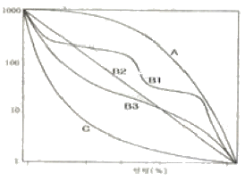
- A
- C1 또는 B2
- B3
- C
(정답률: 알수없음)
16. 다음에서 산호초 생태계에 대한 설명으로 틀린 것은?
- 수온이 20℃ 이상에서만 생성된다.
- 강장동물인 산호출의 군체이다.
- 하조대부터 깊이 50m 까지 서식한다.
- 산호초와 해안이 서로 떨어져 사이에 해협이 있는 것을 거초(fringing reef)라 한다.
(정답률: 알수없음)
17. 천이 후기 출현종의 생태학적 특성으로 틀린 것은?
- 종자의 생산수가 초기 출현종보다 적다.
- 종자의 수명이 초기 출현종보다 짧다.
- 성장속도는 초기 출현종보다 느리다.
- 성체의 크기는 초기 출현종보다 작다.
(정답률: 알수없음)
18. 생물군계에 관한 설명으로 틀린 것은?
- 온대낙엽수림대는 그라이토양이 발달하며, 수엽교목이 주점종이다.
- 북극툰드라는 영구동토를 이루며, 벼과, 사초과, 선태류 및 자의류가 우세하다.
- 북방침엽수림대는 포드졸토양으로 종 다양성이 낮아서 1~2종이 넓게 우점한다.
- 사막의 토양은 대부분이 아리도솔이며 초본이 좀 더 많은 곳은 물리솔이 발달하며, 키 작은 여러 가지 형태의 건생관목이 우점한다.
(정답률: 30%)
19. 다음 [보기]의 ( )안에 들어갈 적합한 용어는?
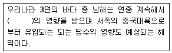
- 연안류
- 대마난류
- 동한난류
- 북한한류
(정답률: 알수없음)
20. 암반 조간대 생물은 건조에 잘 견디도록 진화되어 왔는데, 이런 건조에 견디는 방법과 대표적인 생물의 연결이 틀린 것은?
- 해가 잘 비추는 곳으로 이동 한다. - 게, 고등류
- 바위에 밀착한다. - 삿갓조개, 군부
- 뚜껑을 닫는다. - 따개비, 홍합
- 점액질을 분비 한다 - 말미잘
(정답률: 알수없음)
2과목: 환경계획학
21. 다음 중 생물종의 감소를 방지하고 생물자원의 합리적 이용을 위해 1992년 6월 리우데자네이루에서 채택된 협약은?
- 람사협약
- 생물다양성보존협약
- 사막화방지협약
- 기후변화협약
(정답률: 알수없음)
22. 생태도시의 궁극적인 목표는 도시를 자연생태계가 가지는 4가지 특성을 가지도록 계획해 지속 가능한 발전이 이루어지도록 하는 것이다. 다음 중 그 목표의 특성이 다른 것은?
- 개방성
- 다양성
- 순환성
- 자립성
(정답률: 알수없음)
23. 야생생물이 서식하고 이동하는데 도움이 되는 소면적의 공간단위를 말하는 것으로 숲, 습지, 하천, 화단 등 다양한 규모와 질을 가진 생물서식공간이 될 수 있는 곳을 가리키는 것은?
- 에코 브리지(Eco-bridge
- 분구원
- 방향공원(Hurb-garden)
- 비오톱(Biotop)
(정답률: 알수없음)
24. 도시계획에 대한 사전 환경성 검토의 주요 검토 항목에 해당되지 않는 것은?
- 계획수립 시기 및 범위의 적정성
- 관련 계획과의 부합성
- 자연생태계화의 조화성
- 시민참여 방안
(정답률: 알수없음)
25. 자연환경보전법상 환경부장관은 생태ㆍ경관보전지역의 지속 가능한 보전ㆍ관리를 위하여 생태적 특성, 자연경관 및 지형 여건 등을 고려하여 생태ㆍ경관보전지역을 구분하여 지정ㆍ관리할 수 있는데 그 구분에 해당되지 않는 것은?
- 생태ㆍ경관핵심보전구역
- 생태ㆍ경관다양성보전구역
- 생태ㆍ경관완충보전구역
- 생태ㆍ경관전이보전구역
(정답률: 알수없음)
26. 새로운 환경정책으로서의 ‘생태 네트워크’의 특징이 아닌 것은?
- 생물 다양성의 관점
- 광역 네트워크의 관점
- 독립적인 기능의 관점
- 환경 복원ㆍ창조의 관점
(정답률: 알수없음)
27. 생태 네트워크 계획시 고려할 주요 내용의 설명으로 틀린 것은?
- 생물의 생식ㆍ생육공간이 되는 녹지의 생태적 기능의 향상
- 생물의 생식ㆍ생육공간이 되는 녹지의 확보
- 국토종합계획상의 개발 방향에 따른 녹지 확보
- 인간성 회복의 장이 되는 녹지 확보
(정답률: 알수없음)
28. 자연환경보전법에서 자연보호운동 활성화 및 국민들에 대한 자연환경보전 중요성의 인식증진 등을 위하여 시ㆍ도지사 소속하에 자연환경교육ㆍ연수ㆍ홍보 등의 기능을 수행하는 것의 명칭은?
- 자연환경학습원
- 자연환경교육원
- 자연해설가
- 자연학습 활동가
(정답률: 알수없음)
29. 환경친화적 택지개발의 ‘지구환경의 보전(Low lmpact)적 목적에 해당하는 것은?
- 순환계, 생태계가 더 이상 악화되지 않도록 환경부하를 가능한 한 최소화하여 개발 한다.
- 주택이나 거주자가 가까이에 있는 자연환경이나 생태계를 즐겨 조화로운 관계를 유지해가고자 한다.
- 사람과 자연과의 접촉을 통해 생태계보호와 생태계로부터의 수혜를 동시에 추구한다.
- 인간과 자연 상호에게 유익함을 제공하여 더불어 살아 갈 수 있도록 개발한다.
(정답률: 알수없음)
30. 1971년 유네스코가 설립한 MAB(Man and the Biosphere Programme)에서는 생물권보전지역(Biosphere Reserve)을 지정하고 있는데, MAB에서 보전지역을 구분하기 위한 세가지의 기본요소에 해당되지 않는 것은?
- 완충지대(Buffer zone)
- 핵심지역(Core area)
- 전이지역(Transition area)
- 관리지역(Management area)
(정답률: 알수없음)
31. 국토환경성평가를 위한 환경ㆍ생태적 평가항목 중에서 자연성(식생의 건강성 정도)을 평가하는데 필요한 주제도 및 평가도로서 적합하지 않은 것은?
- 임상도
- 녹지자연도
- 토지피복지도
- 생태ㆍ자연도
(정답률: 알수없음)
32. 생물지역계획의 실행 방향에 있어 분절된 토지를 연계해 에너지 흐름과 동ㆍ식물의 이동 흐름을 원활하게 하는 계획은?
- 건축계획적 기법
- 경관생태학적 방법
- 경관미학적 계획
- 도시설계적 기법
(정답률: 알수없음)
33. 생태ㆍ자연도에서 녹지자연도 등급에 따른 구분 연결이 틀린 것은?
- 1등급 : 시가지(녹지식생이 거의 존재하지 않는 지구)
- 3등급 : 농경지(논 또는 밭 등의 경작지구)
- 5등급 : 2차초원(갈대, 조릿대 군락 등과 같이 비교적 식생의 키가 높은 2차 초원지구)
- 7등급 : 2차림(1차적으로 2차림이라 불리우는 대상식생지구)
(정답률: 알수없음)
34. 자연환경보전법 상의 [보기] 설명의 용어로 옳은 것은?
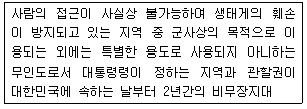
- 자연특정지역
- 자연유보지역
- 자연특별보전지역
- 자연격리지역
(정답률: 알수없음)
35. 국토환경보전계획의 계획 기조가 아닌 것은?
- 인간과 자연의 분리
- 개발과 보전의 조화
- 환경보전과 경제성장의 조화
- 현세대와 미래세대의 형평
(정답률: 알수없음)
36. 다음 중 자연환경보전법상의 자연환경보전 기본계획에 포함되어야 할 내용이 아닌 것은?
- 자연경관의 보전ㆍ관리에 관한 사항
- 생태축의 구축ㆍ추진에 관한 사항
- 생태통로 설치ㆍ훼손지 복원 등 생태계 복원을 위한 주요 사업에 관한 사항
- 비오톱 및 도시공원 설치ㆍ관리에 관한 사항
(정답률: 알수없음)
37. 환경부장관 또는 지자체의 장은 자연환경보전법에 근거하여 ‘생태마을’을 지정하고 관련 조치를 취할 수 있는 바 다음 보기 중 틀린 내용은?
- 생태ㆍ경관보전지역 안의 마을은 생태마을로 지절할 수 있다.
- 생태ㆍ경관을 보유하고 있는 마을은 생태마을로 지정할 수 있다.
- 산림기본법 제 28조의 규정에 의하여 지정된 산촌진흥지역의 마을은 생태마을로 지정할 수 있다.
- 생태마을을 지정한 때는 공공시설 등 당해 지역주민을 위한 편의시설의 설치 및 주민 소득증대 방안을 우선적으로 강구ㆍ시행하여야 한다.
(정답률: 알수없음)
38. 아파트 단지 개발을 위해 현존식생조사를 실시한 결과 발 1km2, 논 1km2, 일본이깔나무 조림지 1km2, 20년 미만상수리나무림 1km2, 20년 이상 신갈나무림 1km2으로 조사되었다. 환경영향평가 협의 결과 녹지자연도 7등급 이상은 보전하고 나머지는 개발 가능한 것으로 협의 되었다. 이 대상지에서 개발 가능한 가용지 면적은?
- 2km2
- 3km2
- 4km2
- 5km2
(정답률: 알수없음)
39. 지역의 생태환경조건을 토지이용계획에 반영하여 토지이용방법의 적부를 평가하는 계획으로 맞는 것은?
- 오염관리계획
- 환경시설계획
- 생태환경계획
- 심미적 환경계획
(정답률: 알수없음)
40. 다음 중 경관 각 조각 모양의 특성을 설명하는 주요 속성이 아닌 것은?
- 굴곡
- 신장
- 연결성
- 둘레
(정답률: 50%)
3과목: 생태복원공학
41. 천이 포텐셜을 결정하는 것이 아닌 것은?
- 종의 수료 포텐셜
- 종의 공급 포텐셜
- 종간관계의 포텐셜
- 입지 포텐셜
(정답률: 알수없음)
42. 다음 [보기]의 ( )안에 들어갈 용어로 적합한 것은?
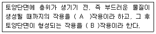
- A : 토양화학, B : 토양생성
- A : 토양생성, B : 토양화학
- A : 풍화, B : 토양생성
- A : 토양생성, B : 풍화
(정답률: 알수없음)
43. 다음 중 서식처 도면화(habitat mapping)를 가장 적절하게 설명하는 것은?
- 초지, 관목 덤불림, 교목림, 습지 등 서식처의 유형을 나타낸 도면을 만드는 것
- 동물상의 분포를 나타낸 도면을 만드는 것
- 자연생태의 등급을 나타낸 도면을 만드는 것
- 녹지의 등급을 나타낸 도면을 만드는 것
(정답률: 60%)
44. 다음 단면도는 비탈면 녹화 파종공법 중 무슨 공법인가?
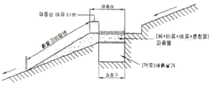
- 조공식 파종공법
- 사면 혼파 공법
- 분사식 파종녹화공법
- 항공 파종녹화공법
(정답률: 알수없음)
45. 다음 중 생물 다양성의 계층성 표현이 옳은 것은?
- 유전자의 다양성 - 생태계의 다양성 - 경관의 다양성 - 종 다양성
- 유전자의 다양성 - 종 다양성 - 생태계의 다양성 - 경관의 다양성
- 유전자의 다양성 - 종 다양성 - 경관의 다양성 - 생태계의 다양성
- 유전자의 다양성 - 생태계의 다양성 - 종 다양성 - 경관의 다양성
(정답률: 알수없음)
46. 파종량 계산식에서 단위 면적당 발생기본대수가 올바르게 표현된 것은?
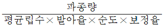
- 파종량×평균립수×발아율×순도×보정율
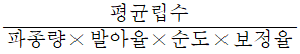
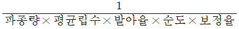
(정답률: 알수없음)
47. 다음은 생태축의 역할 및 기능에 대한 설명이다. 생태적 기능에 해당하지 않는 것은?
- 대기오염 및 소음 저감 기능
- 생물의 다양성 유지 및 증대
- 생물 이동성 증진
- 도시 내 생태계의 균형유지
(정답률: 알수없음)
48. 생태복원의 향후방향 전망으로 거리가 먼 것은?
- 세계화가 생태복원에 영향을 미칠 것이다.
- 생태복원에 대한 사회ㆍ경제적 접근이 강조 될 것이다.
- 생태복원ㆍ녹화기술 분야와 인접분야화의 경계가 확실해질 것이다.
- 생태복원ㆍ녹화기술을 생태도시나 단지계획의 중심에 자리 잡게 될 것이다.
(정답률: 알수없음)
49. 도로사업에서 자연환경 보전대책으로 미티게이션 방법이 있다. 이에 대한 설명으로 옳은 것은?
- 저감 이란 동ㆍ식물의 중요한 생육ㆍ서식환경을 노선으로부터 떨어뜨려서 계획하거나 터널구조와 교량구조를 채용하는 것으로 직접적인 영향을 자연환경에 미치지 않게 하기 위한 방법
- ‘대상’이란 동ㆍ식물의 중요한 생육ㆍ서식환경에 직접적인 영향으로 그치게 하기 위한 방법
- ‘회피’란 동ㆍ식물의 중요한 생육ㆍ서식 환경이 계획에 의해 어쩔 수 없이 사라지게 될 경우 다른 장소에 기존 환경과 유사한 환경을 창출하는 방법
- 일반도로 계획에서는 기본적으로 ‘회피’, ‘저감’의 방법이 이용되고, 그 방법으로 충분한 대응을 할 수 없는 경우에 ‘대상’의 방법이 검토된다.
(정답률: 40%)
50. 다음의 무기질 토양개량제 중에서 보비력이 가장 높은 개량제는?
- 버미큘라이트
- 펄라이트
- 규조토소성립
- 암연을 기본으로 한 유기물 혼합제
(정답률: 알수없음)
51. 해안 사방 망심기의 망 구획 크기로 가장 적합한 것은?
- 50×50cm
- 100×100cm
- 150×150cm
- 200×200cm
(정답률: 25%)
52. 녹화식물의 종류에는 흡착형 식물과 감기형 식물이 있는데 다음 중 흡착형 식물로만 이루어진 것은?
- 마삭줄, 줄사철나무, 노박덩굴
- 개머루, 으아리, 인동
- 칡, 멀꿀, 으름덩굴
- 담쟁이덩굴, 송악, 모람
(정답률: 알수없음)
53. 도시 물 순환체계가 갖는 특징에 해당되는 것은?
- 불투수성 표면증기와 지표면 치밀화로 느린 유출
- 느린 유출에 의한 물 이용의 차질, 수변 생태계의 파괴
- 자연상태의 누수성 표면 감소로 인한 지하침투 감소
- 지하침투 증가로 인한 지하수위 저하
(정답률: 알수없음)
54. 도로 비탈면의 토양에 대한 설계기준이 잘못 짝지어진 것은?
- 유효수분 : 20L/m3 이상
- 투수계수 : 4~10cm/sec 이상
- pH : 5.0~7.5
- 전질소 : 0.06% 이상
(정답률: 알수없음)
55. 자연형 하천공사에서 활용하는 야자섬유망의 규격과 그 시공요령으로 옳은 것은?
- 야자섬유망의 표준 규격은 폭 2m, 길이 5m이다.
- 야자섬유로프는 불순물을 제거하여 두께 2-3cm로 꼬아 만든다.
- 야자섬유망은 사면 토사가 보이지 않게 끝 부분을 서로 맞닿게 설치한다.
- 야자섬유가 지면에서 이탈되지 않도록 착지 핀을 1개/m2 이상 설치한다.
(정답률: 알수없음)
56. 토양수분의 흡인압(pF) 순서가 올바른 것은? (단, 작은 것부터 큰 순으로 표기한다.)
- 중력수 - 흡습수 - 결합수 - 모세관수
- 중력수 - 모세관수 - 흡습수 - 결합수
- 흡습수 - 중력수 - 모세관수 - 결합수
- 결합수 - 중력수 - 흡습수 - 모세관수
(정답률: 알수없음)
57. 압축공기로 콘크리트 또는 모르타르를 시공면에 뿜어 붙이는 공법을 무엇이라 하는가?
- 숏크리트
- 섬유보강콘크리트
- 레디믹스트 콘크리트
- AE콘크리트
(정답률: 42%)
58. 다음의 복원요소재료 중 할증률이 가장 높은 것은?
- 잔디
- 원석(마름돌용)
- 목재
- 조경수목
(정답률: 알수없음)
59. 산림지역에서 야생돌물의 이동통로 및 서식지를 복구하기 위한 전략으로 틀린 것은?
- 산림 내 죽은 나무는 그대로 방치 한다.
- 이동통로 설치는 가급적 짧을수록 바람직하다.
- 서식지 횡단로 변의 가드레일은 존치함이 바람직하다.
- 차량통행이 많은 횡단로 상에는 터널형 이동통로가 육교형보다 더 적합하다.
(정답률: 알수없음)
60. 수로박스, 횡배수관, 수로암거 등을 이용한 겸용 생태통로를 만들 때 어떤 부속시설의 설치가 필요한가?
- 선반이나 턱 구조물
- 비포장 통로
- 울타리 설치
- 경사로
(정답률: 알수없음)
4과목: 경관생태학
61. 강과 바다가 만나는 하구 지역이나, 바다로부터 완전히 폐쇄되어 있지 않아 좁은 입구를 통하여 바다와 연결되기도 한 동해안 해안 부근의 호소들이 이러한 성격을 띠는데, 담수(fresh water)에 의하여 묽게 된 해수로 담수와 해수의 중간염분(0.5%~30%)을 가지는 것은?
- 연안수(沿岸水)
- 기수(汽水)
- 중수(中水)
- 침출수(浸出水)
(정답률: 30%)
62. 지난 반세기 동안 네덜란드 북해 연안과 더불어 우리나라의 서해안에서 가장 활발하게 일어났던 훼손으로 인위적으로 해안경관을 변화시켜 친환경적이지 못하며 자연적인 해안경관을 해치게 된 것은?
- 쓰레기 투기
- 해상 유류 유출 사고
- 간척 및 매립
- 연안의 수많은 양식시설
(정답률: 알수없음)
63. 조각(patch) 모양에 가해지는 제약조건 중 가장 관련이 먼 것은?
- 역동적인 교란이다.
- 생물다양성이 낮다.
- 침식과 퇴적, 빙하 등의 지형학적 요소이다.
- 인공적인 조각에서 많이 볼 수 있는 그물형태로 철도, 도로 등이다.
(정답률: 50%)
64. 인공지반 녹화기술에서 사용되고 있는 파라소의 특성 및 효과와 거리가 먼 것은?
- 배수 및 통기성
- 보수력
- 경량성
- 깊은 토심 유지
(정답률: 알수없음)
65. 토지이용과 토지 관련 정보분야를 나타내는 시스템으로 알맞은 것은?
- TIS
- ElS
- UIS
- LIS
(정답률: 알수없음)
66. 원격탐사와 GIS를 경관생태학과 접목하여 가장 적절하게 활용할 수 있는 사례는?
- 환경영향평가에서의 경관평가
- 생태이동통로의 적지선정
- 해안갯벌의 서식처 보호구역 설정
- 쓰레기매립지의 생태공간계획 및 평가
(정답률: 알수없음)
67. 인위적 교란을 지속적으로 받고 있는 농촌경관의 경관생태학적인 복원 및 보전을 위해 반드시 고려되고 반영되어야 할 요소가 아닌 것은?
- 경작지
- 묘지
- 2차 식생
- 가로수
(정답률: 알수없음)
68. 경관 요소 간의 연결성을 증대하는 방법으로 적절하지 않은 것은?
- 코리더의 설치
- 동물이동로 주변의 포장도로 증설
- 징검다리식 녹지보전
- 기존 녹지의 면적확대
(정답률: 60%)
69. 비오톱 지도화에는 선택적 지도화, 포괄적 지도화, 대표적 지도화로 구분되어 사용된다. 다음 항목 중 포괄적 지도화와 관련된 내용은?
- 보호할 가치가 높은 특별지역에 한해서 조사하는 방법
- 도시 및 지역단위의 생태계 보전 등을 위한 자료로 활용 가능
- 대표성이 있는 비오톱을 조사하여 유사한 비오톱유형에 적용하는 방법
- 비오톱에 대한 많은 자료가 구축된 상태에서 적용이 용이
(정답률: 알수없음)
70. 다음 중 산림생태계의 생태적 천이의 관한 내용 중 서로 상이한 항목은?
- 습성 천이
- 자발적 천이
- 2차 천이
- 건성 천이
(정답률: 알수없음)
71. 다음 [보기]가 설명하는 우리나라 원격탐사 위성의 종류는?
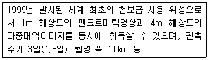
- IRS
- 아리랑
- Landsat
- IKONOS
(정답률: 알수없음)
72. 습지의 현명한 이용(the wise use of wetlands)에 대한 설명으로 거리가 먼 것은?
- 단순한 습지면적의 불변이 아닌 습지의 기능과 가치의 불변을 목표로 한다.
- 인류의 유익을 위해 습지를 생태계의 자연요소로서 관리하고 지속적으로 이용하는 것이다.
- 습지 기능과 가치를 보전하기 위해 개발사업에 의한 습지 훼손이 불가피한 경우 총체적인 사업의 효과가 습지보전에 순이익이 될 수 있도록 한다.
- 대표적인 사례로 국내외에서 시도되고 있는 간척 및 매립사업에 의한 농경지 조성과 도시개발에 따른 녹지 및 공원의 적극적인 확충을 들 수 있다.
(정답률: 알수없음)
73. UNESCO MAB의 생물권 보전지역에 의한 기준에서 다음 설명에 해당되는 것은?
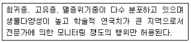
- 핵심지역(Core)
- 완충지역(Buffer)
- 전이지역(Transition)
- 보전지역(Conservation)
(정답률: 알수없음)
74. 개발사업에 따른 생태계에 대한 영향을 평가하기 위한 다음 [보기]의 설명에 해당되는 것은?
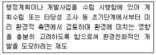
- 비오톱 평가
- 환경영향 평가
- 사전환경성 검토
- 개발행위허가 기준
(정답률: 알수없음)
75. 주연부 효과(edge effect)에 대한 설명으로 틀린 것은?
- 주연부 효과란 군집의 가장자리가 종 다양성이 높은 것을 말한다.
- 숲의 가장자리에 키 작은 나무(관목)이 빽빽하게 자란다.
- 추이대(ecotone)에서도 주연부 효과가 나타난다.
- 주연부 효과는 패치의 중심부까지 깊게 나타난다.
(정답률: 알수없음)
76. 다음 지수성장(Sigmoid curve)의 설명 중 틀린 것은?
- 수용능력이 존재한다.
- 환경저항으로 불리는 인자가 존재한다.
- 개체군이 적을 경우 성장이 빠르게 나타난다.
- 공간과 먹이자원이 무한히 공급되어 성장이 지속적이다.
(정답률: 알수없음)
77. 비오톱(Biotop)의 개념을 가장 바르게 설명한 것은?
- 지생태적 요소 중심의 동질성을 나타내는 공간단위
- 인문적 요소들의 상호작용을 통해 나타나는 동질적 공간단위
- 생물생태, 지생태, 인문적 요소들의 상호복합작용을 통해 동질성을 나타내는 공간단위
- 생물생태적 요소 중심의 동질성을 나타내는 공간단위
(정답률: 알수없음)
78. 다음 중 벡터데이터의 구성요소 중 점, 선, 면에 따라 정보차원이 달리 구성되어 저장되는 것은?
- 위상구조
- 메타데이터
- 가하학 정보
- 래스터데이터
(정답률: 알수없음)
79. 다음 각각의 생태학에 대한 설명으로 틀린 것은?
- 복원생태학은 소규모 생태계 또는 군집의 복원에 치중한다.
- 경관생태학은 경관의 복원을 강조한다.
- 복원생태학의 원리는 메타개체군이라 할 수 있다.
- 보전생태학은 개체를 대상으로 유전학을 간조하고 있다.
(정답률: 30%)
80. 10m 이상의 선장에서 노루풀의 빈도를 조사한 결과 10cm지점, 50cm 지점, 115cm 지점에서 출현하였다. 식물상평가 중 접선법에 의하면 노루풀의 파도율은?
- 3%
- 10.5%
- 11.5%
- 17.5%
(정답률: 알수없음)
5과목: 자연환경관계법규
81. 환경정책기본법상 규정된 용어의 정의로 옳지 않은 것은?
- “환경”이라 함은 자연환경과 생활환경을 말한다.
- “생활환경”이라 함은 대기, 물, 폐기물, 소음ㆍ진동, 악취, 일조 등 사람의 일상생활과 관계되는 환경을 말한다.
- “환경용량”이라 함은 일정한 지역안에서 환경의 질을 유지하고 환경오염 또는 환경훼손에 대하여 환경이 스스로 수용ㆍ정화 및 복원할 수 있는 한계를 말한다.
- “환경오염”이라 함은 야생동ㆍ식물의 남획 및 그 서식지의 파괴, 생태계질서의 교란, 자연경관의 훼손, 표토의 유실 등으로 인하여 자연환경의 본래적 기능에 중대한 손살을 주는 상태를 말한다.
(정답률: 알수없음)
82. 국토의 계획 및 이용에 관한 법률상 토지의 이용실태 및 특성, 장래의 토지이용방향 등을 고려하여 국토를 구분할 때, 그 용도지역을 가장 적합하게 구분한 것은?
- 도시지역, 관리지역, 농림지역, 자연환경보전지역
- 도시지역, 준농림지역, 농림지역, 자연환경보전지역
- 도시지역, 농림지역, 자연환경보전지역, 녹지지역
- 보전지역, 관리지역, 준농림지역, 준도시지역
(정답률: 92%)
83. 야생동ㆍ식물보호법규상 멸종위기야생동ㆍ식물 Ⅰ급으로 지정된 것은?
- 개병풍
- 미호종개
- 맹꽁이
- 먹황새
(정답률: 알수없음)
84. 환경정책기본법령상 오존(O3)의 대기환경기준으로 옳은 것은?
- 8시간 평균치 : 0.15 ppm 이하
- 1시간 평균치 : 0.1 ppm 이하
- 8시간 평균치 : 0.12 ppm 이하
- 1시간 평균치 : 0.06 ppm 이하
(정답률: 알수없음)
85. 국토의 계획 및 이용에 관한 법률상 도시지역내 각 지역별 용적률의 최대한도로 옳은 것은?
- 주거지역 : 200퍼센트 이하
- 상업지역 : 1천퍼센트 이하
- 공업지역 : 250퍼센트 이하
- 녹지지역 : 100퍼센트 이하
(정답률: 알수없음)
86. 야생동ㆍ식물보호법규상 생태계교란야생 동ㆍ식물에 해당되지 않는 것은?
- 단풍잎돼지풀
- 감돌고기
- 도깨비가지
- 붉은귀거북속 전종
(정답률: 알수없음)
87. 독도등도서지역의생태계보전에관한특별법상 환경부장관이 특정도서의 생태계 보전을 위하여 토지 등을 매수하는 경우 토지매수가격은 어느 법에 의해 산정하는가?
- 공유 토지 분할에 관한 특례법
- 공익 사업을 위한 토지등의 취득 및 보상에 관한 법률
- 국토의 계획 및 이용에 관한 법률
- 지가공시 및 토지등의 평가에 관한 법률
(정답률: 알수없음)
88. 야생동ㆍ식물보호법규에 규정된 멸종위기야생동ㆍ식물 Ⅰ급에 해당하지 않는 것은?
- 노랑부리저어새
- 검은머리갈매기
- 참수리
- 흰꼬리수리
(정답률: 알수없음)
89. 습지보전법상 습지보전을 위해 설치할 수 있는 시설 중 가장 거리가 먼 것은?
- 습지연구시설
- 습지준설복원시설
- 습지오염방지시설
- 습지생태관찰시설
(정답률: 알수없음)
90. 개발제한구역의 지정 및 관리에 관한 특별조치법령상 개발 제한구역을 조정 또는 해제할 수 있는 지역이 아닌 것은?
- 도시의 균형적 성장을 위하여 기반시설의 설치 및 시가화 면적 조정 등 토지이용의 합리화를 위하여 필요한 지역
- 개발제한구역에 대한 환경평가 결과 보존가치가 낮게 나타나는 곳으로서 도시용지의 적절한 공급을 위하여 필요한 지역
- 주민이 집단적으로 거주하는 취락으로서 주거환경 개선 및 취락정비가 필요한 지역
- 도로(건설교통부장관이 지정하는 규모의 도로에 한함)ㆍ철도 또는 하천개수로 등의 공공시설의 설치로 인하여 생기는 4천제곱미터의 소규모 단절토지
(정답률: 28%)
91. 자연환경보전법령상 중앙행정기관의 장이 환경부장관 또는 해양수산부장관(단, 해양자연환경에 관한 사항에 한함)과 협의하여야 할 자연환경보전과 직접 관계가 있는 주요 시책 또는 계획으로 가장 거리가 먼 것은?
- 「산림문화ㆍ휴양에 관한 법률」규정에 따른 자연휴양림의 지정
- 「해양개발기본법」규정에 따른 해양수산자원개발계획
- 「광업법」규정에 따른 광업개발계획
- 「문화재보호법」규정에 따른 천연기념물의 지정
(정답률: 알수없음)
92. 다음은 자연환경보전법상 자연환경조사에 관한 설명이다. ( )안에 알맞은 것은?
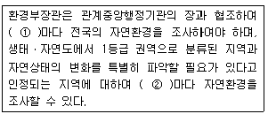
- ① 20년 ② 10년
- ① 15년 ② 10년
- ① 10년 ② 5년
- ① 5년 ② 3년
(정답률: 알수없음)
93. 백두대간보호에 관한 법률에 관한 설명으로 틀린 것은?
- 이 법은 백두대간의 보호에 필요한 사항을 규정하여 무분별한 개발행위로 인한 훼손을 방지함으로써 국토를 건정하게 보전하고 쾌적한 자연환경을 조성함을 목적으로 한다.
- “백두대간”이라 함은 백두산에서 시작하여 금강산ㆍ설악산ㆍ태백산ㆍ소백산을 거쳐 지리산으로 이어지는 큰 산줄기를 말한다.
- “백두대간보호지역”이라 함은 백두대간 중 특별히 보호할 필요가 있다고 인정되어 관련 규정에 의하여 대통령이 지정ㆍ고시하는 지역을 말한ㄷ.
- 산림청장은 백두대간을 효율적으로 보호하기 위한 백두대간보호기본계획을 환경부장관과 협의하여 매 10년마다 수립하여야 한다.
(정답률: 알수없음)
94. 습지보전법규상 다음 ( )안에 알맞은 것은?
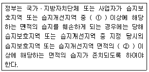
- ① 4분의 1, ② 2분의 1
- ① 2분의 1, ② 2분의 1
- ① 4분의 1, ② 3분의 1
- ① 2분의 1, ② 3분의 1
(정답률: 80%)
95. 농지법규상 실습지 등으로 농지를 소유할 수 있는 공곤단체로 거리가 먼 것은?
- 한국농촌공사
- 농수산물유통공사
- 한국식품개발연구원
- 한국농지개발공사
(정답률: 알수없음)
96. 산지관리법규상 산사태위험판정기준표의 위험요인에 해당되는 점수합계가 “120점 이상 180점 미만인 경우는?
- 산사태발생가능성이 대단히 높은 지역
- 산사태발생가능성이 높은 지역
- 산사태가 발생할 가능성이 낮은 지역
- 산사태가 발생할 가능성이 없는 지역
(정답률: 알수없음)
97. 야생동ㆍ식물보호법규상 외국인 등이 일시 체류를 목적으로 입국하는 자가 출국시 반출하기 위하여 애완용 야생동물을 반입하는 경우 앵무새ㆍ비둘기ㆍ고양이 등 애완용으로의 사육이 일반화된 동물의 반입허용 기준은?
- 1인당 1마리를 초과하지 아니할 것
- 1인당 2마리를 초과하지 아니할 것
- 1인당 3마리를 초과하지 아니할 것
- 1인당 5마리를 초과하지 아니할 것
(정답률: 알수없음)
98. 국토의 계획 및 이용에 관한 법률상 각 용도지구에 관한 설명으로 옳지 않은 것은?
- 한도지구 : 쾌적한 환경조성 및 토지의 고도이용과 그 증진을 위하여 건축물의 높이의 최저한도 또는 최고한도를 규제할 필요가 있는 지구
- 보존지구 : 문화재, 중요 시설물 및 문호적ㆍ생태적으로 보존가치가 큰 지역의 보호와 보존을 위하여 필요한 지구
- 방재지구 : 풍수해, 산사태, 지반의 붕괴 그 밖의 재해를 예방하기 위하여 필요한 지구
- 개발진흥지구 : 주거기능ㆍ휴양기능 등을 집중적으로 개발ㆍ정비할 필요가 있는 지구
(정답률: 알수없음)
99. 자연공원법상 용도지구에서 허용되는 행위에 관한 설명으로 가장 거리가 먼 것은?
- 공원자연보존지구에서는 문화재보호법 규정에 의한 국가지정문화재, 시ㆍ도지정문화재 또는 문화재자료로 지정된 사찰의 복원은 할 수 있다.
- 공원자연환경지구에서는 부대시설을 포함하여 연면적 1천300제곱미터 이하이며 2층 이하인 육상어업시설은 설치할 수 있다.
- 공원자연마을지구에서는 환경오염을 일으키지 아니하는 가내공업(家內工業)은 할 수 있다.
- 공원밀짚마을지구에서는 관광진흥법 규정에 의한 관광숙박시설은 설치할 수 있다.
(정답률: 알수없음)
100. 자연공원법상 어떤 용도지구에 관한 설명인가?
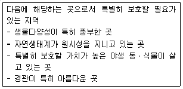
- 공원자연보존지구
- 공원자연마을지구
- 공원밀집마을지구
- 공원집단시설지구
(정답률: 알수없음)